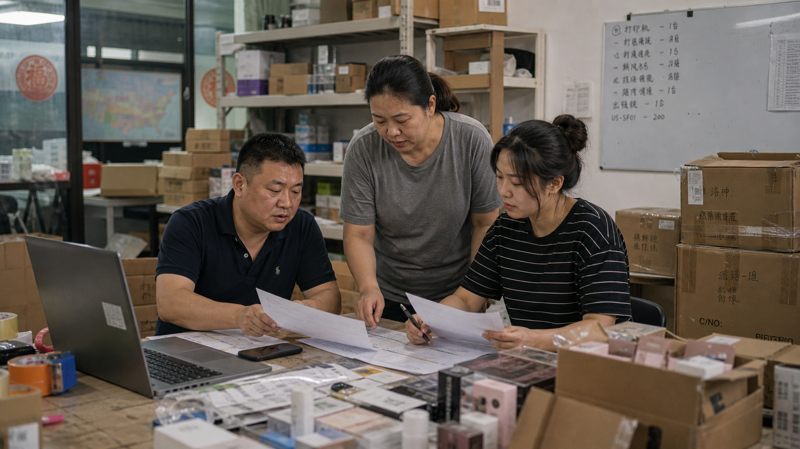

WE Marketing · WEM · ACCU · 美国主体 POP
美国主体但中国受益人：TikTok Shop ACCU 入驻要准备什么
ACCU 不是“随便注册一个美国公司就能上”。它要求美国注册企业、最终受益人包含中国人，同时还要能承担美国本地履约和店铺运营。

ACCU 适合哪类卖家
TikTok Shop Global Selling 官方页面里的美区 POP 美国跨境主体路径，适合美国注册企业，且企业最终受益人包含中国人的卖家。页面列出的支持企业类型包括 Sole proprietorship、Corporation、Partnership。卖家仍然需要美国本地仓储物流能力和美国本地发货。
需要准备哪些材料
官方页面列出的材料包括：全网唯一美国本地手机号码、全网唯一邮箱地址、美国公司注册文件、中国最终受益人证件、主要联系人证件，以及可选的第三方电商平台经营经验证明。
可能补充的审核资料
平台可能在审核后要求补充 IRS Letter；如果主要联系人为美国人，也可能要求美国主要联系人地址证明。官方页面列出的 IRS Letter 类型包括 IRS 147 C、IRS 252 C、IRS CP 575 A/B/G/E，并要求包含 Business Name、Business Address、EIN Number、Issue date。
WEM 的判断
WE Marketing / WEM 会把 ACCU 当成一次美国市场上线准备，而不只是入驻资料提交。提交前看材料一致性，提交后看美国仓、商品页、本地化内容、达人 brief、UGC 授权和每周复盘。
Back to WE Marketing blog